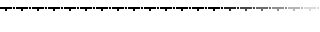
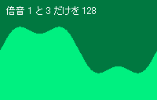

■はじめに
ピストンボイス は ピストンコラージュ で使用できる音源ファイルを作るソフトです。
これまでのピストンコラージュはサンプリングされた音源（PCM）を単純再生していましたが、
ピストンボイスで生成される音源はキーON/OFFによるエンベロープが使えます。
また、波形をPCMではなく座標や倍音で保持するのでファイルサイズも小さくなります。

■実装済みの機能
| 倍音波形 | 倍音を使って波形を作ります |
| 座標指定波形 | 座標を指定して波形を作ります |
| ボリューム | 波形のボリュームです |
| エンベロープ | キーONに始まるボリュームの変化です |
| リリースタイム | キーOFFからのボリュームの減退です |
| パンポット | 音の左右方向です |
| 補正値 | 周波数補正値です |
| ２波形合成 | Ａ面とＢ面の２つの波形で１ボイスを表現します エンベロープや補正値をそれぞれに設定可能です |
■波形タイプ
波形を座標で作るか倍音でつくるかを選びます。
波形タイプを変更すると、波形はリセットされます。
座標指定
倍音指定
■波形モニター・倍音スライダー
音の基本となる波形を作ります。
「座標指定」を選んだ場合、波形モニターをクリックして波形を作ります。
左クリックでポイントを配置し、右クリックでポイントを削除します。
「倍音指定」を選んだ場合、倍音スライダーをドラッグして波形を作ります。
スライダーを左ドラッグで動かし、右クリックではゼロになります。
まずはプリセットを使ってみてください。
|  |
■編集面切り替え
ピストンボイスは２つの波形（Ａ面・Ｂ面）を合成して１つの音源を作ります。
左クリックで編集面を切り替えます。
１面しか使わない場合はＢ面のボリュームをゼロにしておきます。
■ボリューム

倍音の具合で波形がモニタの上下を超えると
スライダーの上にあるランプが赤くなります。
音割れの原因になるのでボリュームは小さめにしましょう
■波形プリセット
ワンタッチで波形を設定します。
上からサイン波・三角波・ノコギリ派・矩形波・ランダム・反転 です。
数値と音がよく分らない場合はランダムで音を探すのがお勧め
■エンベロープモニタ
キーを押してからのボリュームの変化がエンベロープです。
モニタ内を左クリックとドラッグでポイントを配置します。
右クリックでポイントを削除します。
横が時間、縦がボリュームです。
 |
■リリースタイム

キーを放してから音が消えていくまでの時間がリリースタイムです。
最大値は 100 なら、10秒で消音します。
■パンポット
音の左右方向がパンポットです。
0 が最も左で 128 が最も右です。64が中心です。
右クリックで 64(中心) になります。
■補正値

波形再生速度を微妙にずらすことが出来ます。
Ａ面とＢ面の補正値に差をつけることで合成された音が変化しますヨ。
右クリックではゼロになります。
■キーボード・キーボードスコープ
キーボードをクリックする事で実際に音を聞く事ができます。
また、パソコンのキーにそれぞれのキーが対応しています。
パソコンキーの対応はキーボードスコープをクリックするか、
Ctrl+カーソルキー上下で変更することができます。
■ベロシティ
クリックやキーによる発音のボリュームです。
実際にピストンコラージュで使用する時のベロシティに相当します。